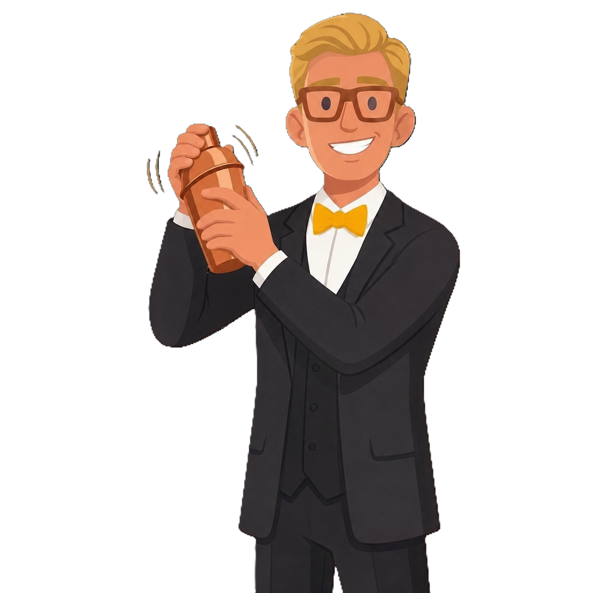

Introduction
My name is Joao Pedro Luz Rodrigues. This is an introductory e-portfolio/website to briefly present my skills, employment background, qualifications, and also introduce who I am and my goals. I have been living in Ireland since 2023; I moved here in order to strive for new experiences and enhance my English skills. I am currently undertaking a Bachelor of Science (BSc) in Computing at Dublin Business School (DBS), and I am eager to begin my professional career at the earliest opportunity.
I invite you to explore this portfolio and learn more about my experiences and development.
Personal Projects
Hostel Website
pousadasilvestre.net
I developed this website during High School for my stepfather's business.
Built with: PHP, HTML, CSS
Calculator Project
calculator-v1-bay.vercel.app
A calculator app I built during High School, deployed on Vercel.
Built with: HTML, CSS, JavaScript
Work Background
Waiter
Jan/2026 — Currently Working
Pitt Bros
As a waiter at Pitt Bros, I am responsible for maintaining the work environment, taking and serving orders, and ensuring customers' well-being. If any issues arise with the food or customer experience, I take responsibility for resolving them or finding a suitable solution that meets the customers' needs.


Barista
April/2024 — Jan/2026
KSG
My duties at KSG as a Barista included fulfilling coffee orders, taking customer orders, and maintaining a clean and organised work environment at all times. I was also responsible for restocking pastries and drinks throughout the day and, most importantly, ensuring that customers' needs were consistently met.
Bartender
Dec/2021 — Jan/2023
Porto Imbe
This job was in Brazil, where I prepared a variety of Brazilian drinks as well as well-known beverages such as Mojitos, Cuba Libre, and Aperol Spritz. It was a very enjoyable first employment experience, during which I learned the fundamentals of customer service and developed a strong foundation in essential soft skills.

Volunteer Experiences

Project to Teach Robotics
Jun/2021 — Dec/2021
Instituto Federal Do Rio Grande do Sul
This project was the most fascinating one I have been involved in. We planned and delivered introductory classes in basic robotics and Arduino programming for first-year students in 2021. We taught a range of concepts and successfully developed several projects with the students.
Career Goals
Main Goals
I have many aspirations in life, as I am a very ambitious person who strives to achieve significant goals. However, the most important priority for me is to continue improving myself and to remain focused on what makes me happy.
Important things I plan for the next 4 years:
- Get my driver's licence
- Build a strong LinkedIn profile
- Graduate with First Class Honours
- Land my first role in the tech industry